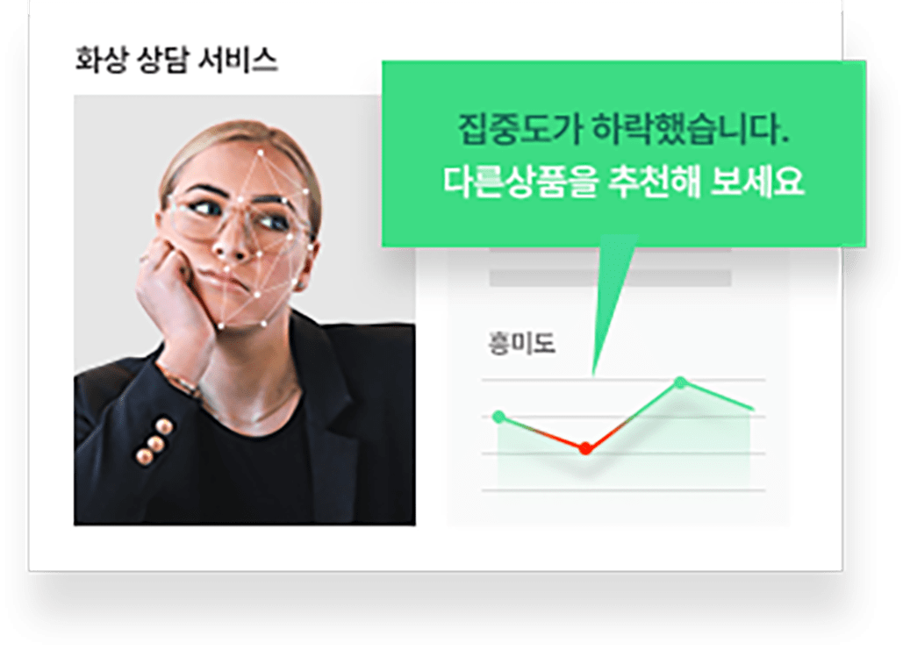
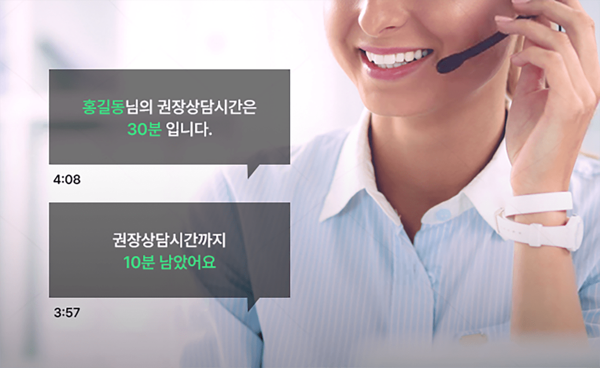
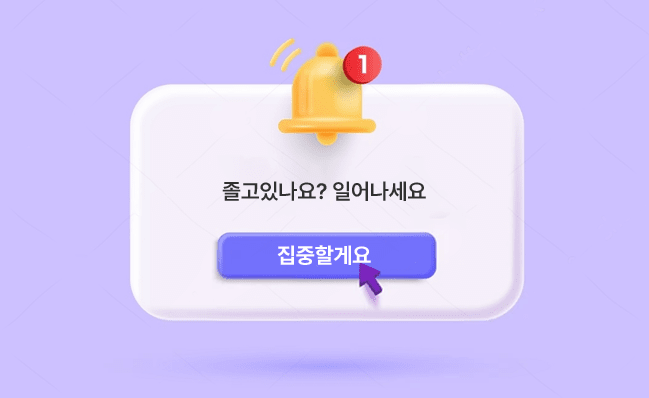
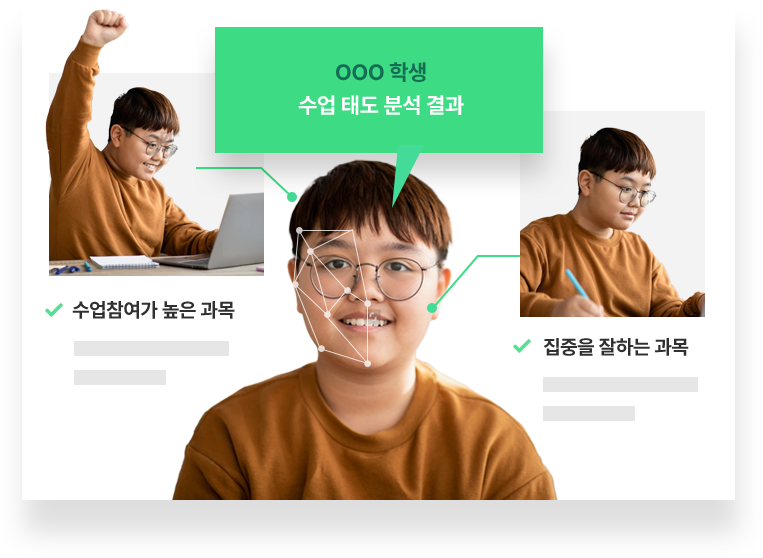

실시간으로 고객의 상태를 확인하고 원활한 화상상담 진행이 가능합니다.

- 고객 집중도 및
흥미도 실시간 측정
-
고객의 집중도나 흥미도가 떨어지면 상담자에게 알림을 보냅니다.
실시간으로 상대방의 반응을 확인하며 원활한 상담을 진행할 수 있습니다.
#집중도 분석
#흥미도 분석
#자세 분석
- 부정 감정 감지 및
자동 화면 전환
-
상담 중 자료화면을 띄워 놓은 상태에서 고객의 표정을 확인할 수 없을 때,
부정적 감정을 감지하면 화면 위로 고객의 표정이
자동으로 팝업되어 적절한 피드백을 제공할 수 있습니다.
#흥미도 분석
- 고객 부재 시 알림 제공
-
상담 중 자료를 띄워 놓은 상태에서 고객의 상태를 확인할 수 없을 때, 고객이 자리를 비우거나 화면을 보고 있지 않으면 알림을 받을 수
있습니다.
#자세 분석
레이즈미와 함께하는 화상상담, 이런 것도 가능해요!
- 상담자료에 대한 집중도•흥미도 측정
- 상담자료 설명 시 고객의 집중도와 흥미도를 측정하여 부족한 설명을 보충하거나 개선할 수 있습니다.
- 상담 결과 리포트
- 전체 상담 시간 중 긍정적인 반응을 보인 횟수와 시간을 계산합니다.
- 고객 성향 파악
- 고객별 상담 데이터를 통해 개인별 성향을 파악하고 다음 상담에 활용할 수 있습니다.

- 상담 코칭 가이드
- 측정된 고객의 감정값을 기준으로 AI가 상담 중 화제를 전환하도록 코칭 가이드를 제공합니다.
- 추가•재상담 추천
- 상담 종료 후, 종합 점수가 일정 수준 이하일 경우 AI가 재상담이나 추가 미팅을 추천합니다.
레이즈미와 함께서비스를 혁신하세요!
-
상담 중 고객 스스로 인지하지 못한
관심사나 요구사항을 카운슬러가
역으로 제안드릴 수 있습니다.
-
고객의 심리상태와 집중도를 반영한
데이터를 기반으로
원활한 상담이 가능합니다.
-
누적된 상담 데이터를 이용해
상품의 개선 및 카운슬러 트레이닝에
활용할 수 있습니다.
수강생들의 집중도를 측정하고 효율적인 학습 관리가 가능합니다.
- 집중도 측정 및 저하 구간 복습
-
강의를 시청하는 수강생의 집중도를 측정하고 집중도가 일정 수치 이하로 떨어진 구간을 안내합니다.
집중도가 떨어진 구간만 복습하여 학습효과를 높일 수 있습니다.
#집중도 분석
- 강의 종합 리포트 제공
-
인터넷강의 시청 중 집중도가 떨어지거나 졸았던 구간, 자리비움 횟수 등을 파악할 수 있습니다.
데이터를 강의를 개선하는데 활용할
수 있습니다.
#집중도 분석
#흥미도 분석
#자세 분석
- 자리비움 시 강의 자동 중지.재생
-
강의 중 자리를 비울 때 별도로 중지.재생 버튼을 실행하지 않아도 AI가 자리비움을 감지하여 자동으로 강의를 중지하고 자리에 돌아오면
자동으로 다시 재생합니다.
#자세 분석
레이즈미와 함께하는 인터넷강의, 이런 것도 가능해요!
- 집중도 미달 강의 복습 추천
- 집중도를 일정 비율 이상 충족하지 못한 상태로 다음 강의로 넘어가기 전에 복습을 추천합니다.
- 취약 과목 및 단원 분석
- 과목별 집중도를 분석해서 수강생들의 취약 과목 및 단원을 분석하고 학습 스케줄을 추천합니다.
- 집중도 저하 시 휴식 제안
- 강의 시청 중 졸거나 집중도가 일정 수치 이하일 경우 컨디션을 고려하여 휴식을 제안합니다.

- 졸음 경고 알림
- 강의 시청 중 조는 수강생을 깨우는 보이스 알림을 발송해서 다시 강의에 집중 할 수 있도록 합니다.
- 모션 인식 컨트롤러
- AI가 수강생의 모션을 인식해 강의를 일시정지하거나 간편하게 북마크 해놓을 수 있습니다.
레이즈미와 함께서비스를 혁신하세요!
-
강의를 시청하면서 이해하지 못한
구간이나 단원만 집중적으로 복습하고
학습의 효율을 극대화할 수 있습니다.
-
AI가 측정한 데이터로
부족한 과목이나 회차를 파악해서
효율적인 학습이 가능합니다.
-
집중도를 반영한 리포트를 기반으로
강의 내용이나 방식을 개선하는데
활용할 수 있습니다.
캠스터디, 온라인독서실 이용자들의 집중도를 학습자세 평가 AI 엔진이 측정해드립니다.
- 시간 대비 학습효율 자동 측정
-
전체 공부 시간 중 실제 집중한 시간을 AI가 분석하여 학습 효율을 측정해드립니다. 시간대비 공부 효율을 확인하고 집중도를 높이거나
유지하는데 활용할 수 있습니다.
#집중도 분석
#자세 분석
- 집중도 분석 리포트 제공
-
AI가 실시간으로 집중도를 측정하여 객관적이고 정확하게 측정해드립니다. 분석 리포트의 패턴을 분석해서 효율적으로 시간을 관리할 수
있습니다.
#집중도 분석
#자세 분석
- 자동 학습 스케줄링
-
과목별 성과를 바탕으로 학습 스케줄을 자동으로 생성해드립니다.
나에게 부족한 과목을 추천하거나 과목별 적절한 공부 시간을 분배할 수 있습니다.
#집중도 분석
#흥미도 분석
#자세 분석
레이즈미와 함께하는 자율학습, 이런 것도 가능해요!
- 학습 블랙리스트 행위 측정
- 졸거나 자리 비우기 같은 학습 블랙리스트 행위의 유형•빈도수를 측정합니다.
- 학습 컨디션 조절
- 집중도 저하 시 적절한 휴식을 권유하는 학습 컨디션 조절 기능입니다.
- 분석 리포트 SNS 공유
- 공부 시간, 집중도, 효율 등의 분석 데이터를 SNS에 공유합니다.
- 유저 맞춤형 응원 메시지
- 하위 랭킹 유저에게는 격려 메시지를, 상위 랭킹 유저에게는 칭찬 메시지를 전송합니다.
- 다른 사용자 학습 스케줄 가져오기
- 집중도 상위 랭킹 사용자들의 학습 스케줄을 찾아보고 나의 학습 스케줄에 적용할 수 있습니다.
레이즈미와 함께서비스를 혁신하세요!
-
집중도 유지•향상을 통해
자기주도학습 역량을 강화할 수 있습니다.
-
사람이 아닌 AI가 관리하여
24시간 더 정확한 관리•감독이 가능합니다.
-
AI가 측정한 데이터로
공부 습관 개선을 위한
객관적 지표로 활용할 수 있습니다.
원격 수업을 진행하면서 수집한 데이터를 기반으로 효과적인 수업 지도가 가능합니다.
- 학습 지도 대상 자동 선정
-
수업 중 반복적으로 자리를 비우거나, 지속적으로 집중도가 떨어지는 등 지도가 필요한 학생 개인 혹은 모둠을 AI가 지정하여 학습 지도
대상으로 전달해드립니다.
#집중도 분석
#자세 분석

- 개인 종합 분석 데이터 제공
-
수업 결과 데이터로 학생들이 흥미를 가진 과목이나 전반적인 수업 자세를 파악할 수 있습니다.
데이터를 근거로 진로 상담이나 학부모 상담에 활용할 수 있습니다.
#집중도 분석
#흥미도 분석
#자세 분석
- 그룹별 종합 분석 데이터 제공
-
수업 중 전반적으로 집중도가 저하하거나 수업 자세가 안 좋아지면 AI가 알림을 제공하고, 이를 통해 수업진도를 조절하거나 집중력을
환기시킬 수 있습니다.
#집중도 분석
#흥미도 분석
#자세 분석
레이즈미와 함께하는 원격수업, 이런 것도 가능해요!
- 학생용 학습 데이터
- 학생 스스로 취약한 과목을 파악하고 공부의 비중을 조절할 수 있습니다.
- 자리비움 알림
- 일정 시간 이상 자리를 비운 학생에게 SMS를 발송하고 학생 화면에 알림을 띄웁니다.
- 조는 학생 깨우기
- 수업 중 조는 학생을 깨우는 보이스 알림을 제공합니다.
- 질문•발표 학생 보기
- 질문을 하거나 발표하기 위해 손을 드는 학생들의 화면만 선별하여 보여줍니다.
- 모션 인식 투표
- 여럿이 투표를 하는 경우 특정 액션을 취하면 찬성•반대 여부를 자동으로 집계합니다.
레이즈미와 함께서비스를 혁신하세요!
-
개별•반별 데이터를 기반으로
학생들의 수업자세를 관리하고
수업내용을 개선할 수 있습니다.
-
학생 스스로 수업자세에 대한
자발적 평가 기준으로 삼을 수 있습니다.
-
학부모가 자녀의 학교 생활 및
수업자세를 확인하는 지표로
활용할 수 있습니다.
부정행위 걱정 없이 온라인시험을 운영, 감독하세요
닫기